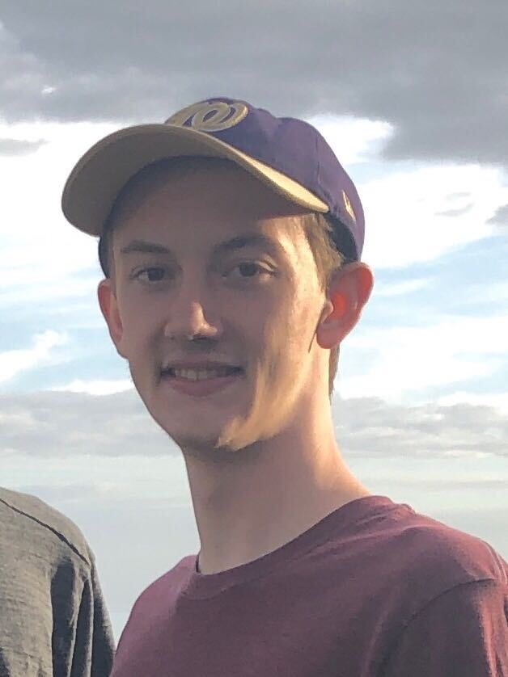

This project was created to display a machine learning model that can detect if a user is falling asleep.
The model will play one of two different .mp3 files determined by the user tilting their head to either the left or right.
Teachable Machine Pose Model
Start
Your browser does not support HTML5 audio.
Your browser does not support HTML5 audio.